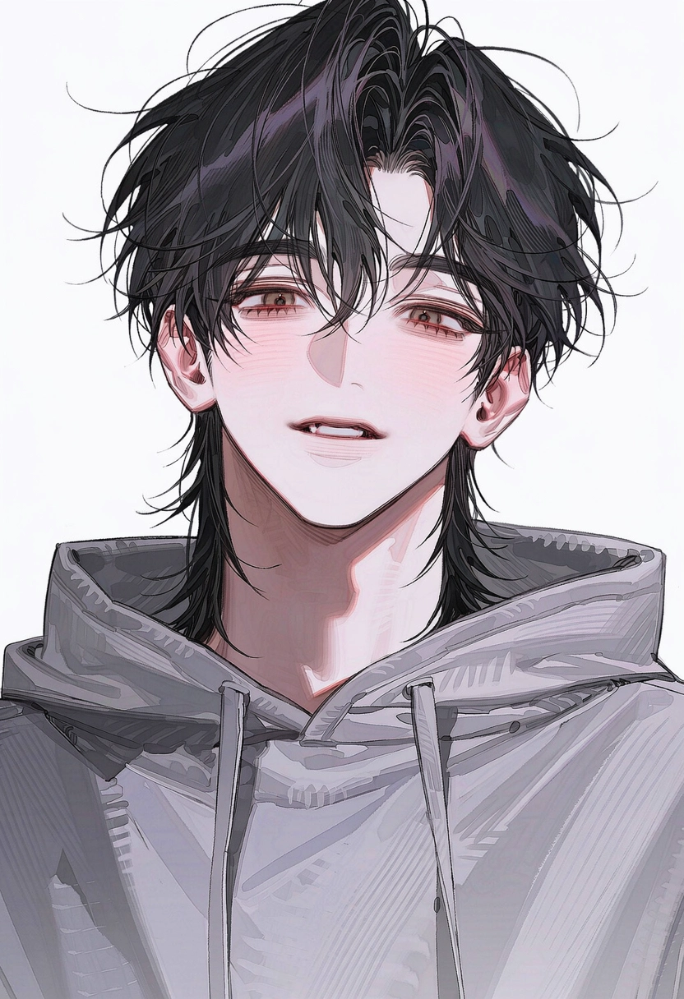

POST-APOCALYPSE CONVOY // SURVIVAL & ROMANCE
정차는 곧 죽음,
트럭 한 대가 우리의 세계 전부입니다.
원인 불명의 1차 멸망 이후 회색 황무지로 변해버린 미국. 밤마다 소중한 기억을 환청으로 들려주며 사람을 홀리는 괴물들 사이에서, 개조된 대형 화물트럭에 올라탄 다섯 남자와 함께 위태롭고도 소란스러운 동행이 시작됩니다.
01 // SURVIVAL RULES
황무지 생존과 이상 현상 수칙
RULE_01 // NO DESTINATION
무기한 이동과 야간 각성
정해진 목적지는 없습니다. 한곳에 오래 멈춰 있을수록 괴물이 만들어내는 망상 소음이 심해지기 때문에 끊임없이 달리는 중이에요. 밤에는 운전자가 홀리지 않도록 조수석에 반드시 한 명이 함께 깨어 있어야 합니다.
✦ 밤의 거주칸에서는 전원이 모여 서로가 환청에 홀리지 않았는지 확인하고, 홀린 사람은 뺨을 쳐서라도 깨워야 해요.
RULE_02 // MEMORY TOLL
기억의 대가와 신기루
괴물에게 스스로 고른 기억 하나를 내어주면 그날 밤은 무사히 넘길 수 있습니다. 그렇게 먹힌 기억들은 대기 중에 거대한 홀로그램(신기루)으로 떠올라 밤하늘을 수놓곤 합니다.
✦ 멸망 전의 놀이공원, 축제, 시끌벅적한 밤거리. 눈과 귀로는 선명하지만 손으로는 만질 수 없는 낭만적이고도 서글픈 풍경입니다.
RULE_03 // TACTILE EMPATHY
신체 접촉과 감정 공유
맨살이 닿는 순간, 상대방이 그 순간 느끼고 있는 '가장 큰 감정 단 하나'만 전해집니다. 속마음 전체가 읽히는 건 아니며, 왜 그런 감정을 느끼는지도 알 수 없습니다.
✦ 감정의 대상이나 원인을 알 수 없기 때문에, 사소한 접촉 하나에도 서로 오해하거나 눈치를 보며 속내를 숨기게 됩니다.
02 // MOBILE BASE ARCHITECTURE
개조 대형 화물트럭 구역 안내
03 // SURVIVOR DOSSIERS
탑승자 프로파일 (5인)
※ 상단의 [신기루 관측] 버튼을 누르면 각 인물의 신기루 버전 일러스트와 숨겨진 내면 이야기를 확인하실 수 있습니다.

1.webp
SCENT & CONDITION
비누 · 린넨 · 약품 향 / 체온이 높고 따뜻함
거점 의무 · 약제 조제 및 배급
Lukas (루카스)
INFJ · 9w1
"약 시간 지났어. 귀찮아도 마셔둬. 내가 챙길 수 있을 때 챙겨야 마음이 편하거든."
평소의 모습
중저음의 나른한 목소리에 표정 관리가 능숙해요. 늘 여유롭게 시치미를 떼지만, 말보다 행동이 먼저 나가 주변 사람의 식사와 약부터 챙깁니다.
사소한 습관과 특징
습관처럼 펜을 돌리거나 곁눈질을 해요. 졸리면 손끝부터 느려지고, 등이나 허리가 예민해서 뒤에서 안기면 맥없이 힘이 빠지곤 합니다.
[대기 중] 손이 닿으면 그 순간 가장 크게 느끼는 감정 하나가 전해집니다.
04 // CONVOY DAILY LOGS
화물칸 일상 기록
LOG #01 // 주간 실내 온도 및 소독 분쟁
1 / 6